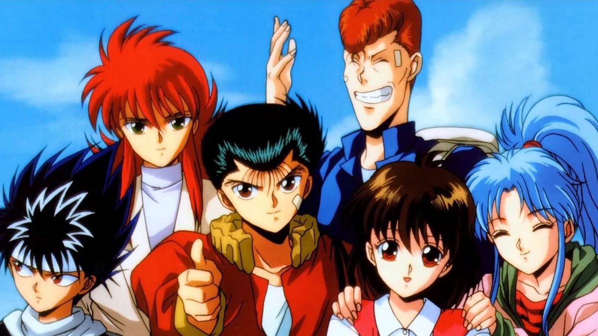
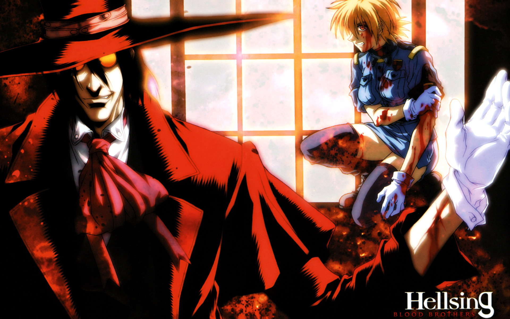
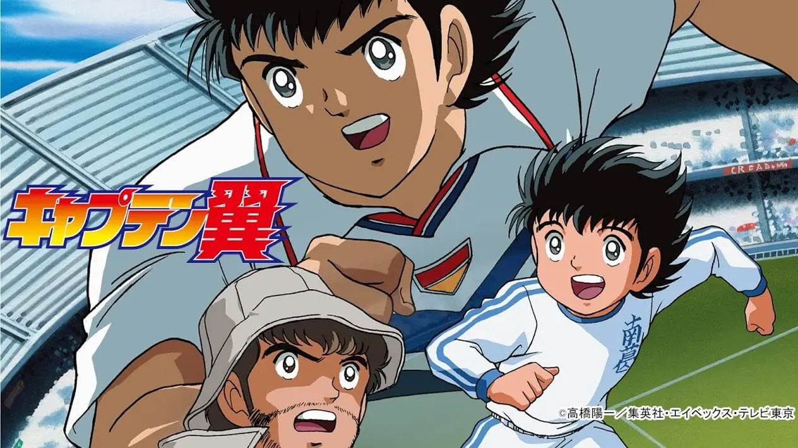

Este é um site dedicado a compartilhar informações sobre animes clássicos. Aqui você encontrará resenhas, análises e recomendações de animes que marcaram época. Fique à vontade para explorar o conteúdo e descobrir novos títulos para assistir!
Destaques
Maratona/Todos os episódios de Yuyu Hakusho-Dub-"PT-BR"
Maratona/Todos os episódios de Hellsing-Dub-"PT-BR"
Maratona/Todos os episódios: Super Campeões-2002-Dub-"PT-BR"
Yuyu Hakusho 
- Descrição:Yuyu Hakusho é um anime de ação e aventura que segue a história de Yusuke Urameshi, um adolescente delinquente que morre ao salvar uma criança de um acidente. Ele é ressuscitado como um detetive espiritual e deve enfrentar diversos desafios para proteger o mundo dos espíritos malignos.
Click na imagem acima para assistir sua Primeira Abertura
Hellsing 
- Descrição: Hellsing é um anime de ação e horror que segue a história da organização Hellsing, liderada por Sir Integra Hellsing, que luta contra criaturas sobrenaturais, principalmente vampiros. O protagonista é Alucard, um poderoso vampiro que serve à organização e enfrenta diversos inimigos para proteger a humanidade.
Click na imagem acima para assistir sua Primeira Abertura
Super Campeões 
- Descrição: Super Campeões é um anime de esportes que segue a história de Oliver Tsubasa, um jovem jogador de futebol com um talento extraordinário. Ele sonha em se tornar o melhor jogador do mundo e enfrenta diversos desafios para alcançar seu objetivo, incluindo competições acirradas e adversários formidáveis.
Click na imagem acima para assistir sua Primeira Abertura